A VAVE Campfire talk · Hannes
PLAYING WITH FIRE
AI and vibecoding, around the campfire.
Title slide while people arrive. Let the fire crackle; nobody needs to read anything yet.
00 · Gather round
One word: right now, AI makes me feel …
Welcome to the campfire. No slides that read themselves, no maths: just stories, a few live experiments,
and questions whenever they come up. If you have one, drop it as a bubble, I'll pick it up.
Everybody adds one word on the board; read three out loud: one excited, one sceptical, one funny.
Tonight
Three promises
Understand What these tools are . Without maths.
See Real things built by a non-developer, some built for you .
Take home Fireplace rules: use it without getting burnt.
Three promises. You will understand what these tools are, without maths.
You will see real things built by a non-developer, including things built for you.
And you will leave with fireplace rules: how to use this without getting burnt.
The trail tonight · nine stations

This is our trail: from the spark, what an LLM is, to the forge, how real software gets built, and on to the embers,
what VAVE can start on Monday. Questions are welcome at any time as bubbles; I pick them up at the end of each station.
01 · Who's by the fire
Before we talk about fire
Hippie parents · farm childhood · the winery · viticulture engineer · public administration · vibecoder
Before we talk about fire, let me tell you who's holding the matches.
Hippie parents, a childhood on a farm, the farm became a winery, I became a viticulture engineer,
then the wine crisis took me into public administration, and now I'm a vibecoder. Check the wording before the talk.
01 · Who's by the fire
“I'm not a developer. I never studied computer science. What I am is a translator : I know what the problem feels like, and I've learnt to explain it to a machine.”
Show: pix-el.de or the email-checker, 60 seconds
I'm not a developer. My day job is in public administration, not in IT.
What I am is a translator: I know what the problem feels like, and I've learnt to explain it to a machine.
Show one thing for sixty seconds: pix-el.de with the hopping Pix, or the email-checker with dummy data.
01 · One year of building
323
test files in the biggest one
440+
PixiNotes milestones in four months
One tile per repository, coloured by kind: work tools, family business, play, and VAVE. Forty-one of them.
The biggest one has 323 test files. PixiNotes went from version one on 14 July 2026 to more than 440 milestones
in four months.
So what is this machine?
Let's look at the spark.
So what is this machine I'm talking to? Let's look at the spark.